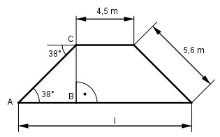

Aufgabe 85 Ein symmetrischer Deich ist oben 4,5 m breit. Die Böschungen sind jeweils 5,6 m lang und von oben nach unten unter 38° geneigt. Wie breit ist der Deich unten?

Im Dreieck ABC: AB cos 38° = --------- |*5,6 m 5,6 m 5,6 m * cos 38° = AB AB = 5,6 m * 0,788 = 4,4 m l = 4,5 m + 2 * 4,4 m = 13,3 m